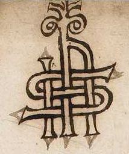

Jon Skonvig (*ca. 1600 - †1664) - auch: Jonas Schonvig
Wann er genau auf die Welt kam ist unbekannt. Er wurde aber als Sohn des Pfarrers Anders Jonssøn (oder Jenssøn) in Norwegen, in Skånevik in Søndre Søndhordsland, im Bergen Stift, um 1600 geboren.
Jonas, oder Jon als norwegische Version, wurde am 13. Juni 1622 in der Universität in Greifswald unter dem Namen "Jonas Andreae Norwegus" eingeschrieben (Theologiestudium?). An der Universität Kopenhagen erfolgte seine Immatrikulation am 02.10.1626 als "Jonas And. Schonvigius Norv. Berg. ex Academia Gryphiswaldensi". Es gibt keine Informationen, dass er je einen Universitätsabschluss gemacht hätte.
Während seiner Studienzeit muss er neben seinen Reisen innerhalb von Dänemark auch eine Reise nach Norwegen unternommen haben, woraus die Handschrift AM 370 fol. resultiert, deren Deckblatt u.a. mit der Jahreszahl "1626" versehen ist. Link zu einer Info der Uni Kopenhagen.
Am 21.03.1628 wurde er "Skibspræst" (Priester, der mit einem Schiff / Handelsschiff auf einer langen Reise oder Kriegsschiff reist, um an Bord Gottesdienste und andere kirchliche Handlungen durchzuführen) auf dem Holmen (Stadtviertel in Kopenhagen, ehemals Militärgelände). Dieses Amt hatte er bis zum 29.12.1635 inne. Dies wurden damals eigentlich nur Pfarrer, die irgendwelche Probleme hatten (z.B. Alkohol/Streitigkeiten/Frauengeschichten usw.), worüber bei ihm aber nichts bekannt ist.
Am 15.04.1628 hat er sich verlobt und am 08.02.1629 hat er die Tochter des Skipper Bent Svendsen, Maren Bentsdatter, geheiratet. Er zeugte mit ihr mehrere Kinder - *08.02.1630 - Tochter Margrete / *24.06.1633 - Sohn Hans / zw. 1635 und 1645 kamen zudem die Söhne Henrik (verstarb schon in dem Zeitraum) und Anders (*1640 - verstarb bereits am 18.08.1652) , sowie die Töchter Dorte, Karen und Maren auf die Welt.
In der gedruckten Literatur trifft man nur einmal auf Jon Skonvig in einem kleinen Büchlein mit nur vier schmalen Blättern, das 1633 in Kopenhagen gedruckt wurde. Es ist ein Trauergedicht von Rasmus Willich über Prinz Ulrich von Dänemark (*02.02.1611 - †11.08.1633). Dort heiÃt es "efter gode Velb. Mends begiering siden fordanskett aff J. A. Schonvigio", d.h. er hat das lateinisch verfasste Gedicht ins Dänische übersetzt.
Dem Tagebuch des damaligen Bischof von Odense (1616-1651), Prof. Dr. theol. Hans Mikkelsen (*01.01.1578 - †25.03.1651) kann man entnehmen, dass dieser am 09. August 1627 Ionas Andersen in die Pfarrgemeinden geschickt hat um dort nach Runeninschriften zu suchen. Von daher muss die Erstellung der Handschrift AM 366 fol. - Lolland und Fünen nach diesem Datum erfolgt sein.
Im Frühjahr 1635 wurde er auf die Pfarrstelle Bråby-Haslev/Seeland berufen, wo er offenbar hohes Ansehen genossen hatte und wo er bis zu seinem Tod blieb, die letzten Jahre offenbar körperlich geschwächt.
Wenn man sich seine Zeichnungen anschaut, muss man festhalten, dass er wahrlich kein Talent dafür hatte, er war kein Künstler, nur ein naiver Zeichner, der die Runendenkmäler oft in verzerrter Perspektive mit falschen Proportionen zu Papier brachte und auch sonst viele Fehler machte. Aber trotzdem war er der erste professionelle Zeichner dieser speziellen Denkmäler und seine Deutungen der Inschriften waren insgesamt oft besser als die seiner zeitgleichen Kollegen und auch besser als die von Ole Worm (*13.05.1588 - †31.08.1654, Arzt, Universalgelehrter und der Begründer der Runologie). Zu seinen Gunsten muss auch berücksichtigt werden, dass er nunmal kein ausgebildeter Zeichner war, dass er altnordisch als Sprache nicht beherrschte und dass er in wenigen Jahren wirklich sehr fleiÃig war und eine Vielzahl von Runendenkmälern aufgesucht und erfasst hat. Bei einigen verschwundenen Runensteinen sind seine Aufzeichnungen die einzige Quelle zu deren Inschrift/Fundort/Aussehen/usw. Skonvig hat mit seiner Arbeit ein extrem wichtiges und nützliches Material hinterlassen, das nicht nur von historischem Interesse, sondern auch für das gesamte Studium der Runologie auÃerordentlich wertvoll ist. Er hat auf diesem Gebiet wahre Pionierarbeit geleistet!
Seine Werke waren die enorm wichtige Vorarbeit für das darauf aufbauende, herausragende Runenwerk von Ole Worm (*13.05.1588 - †31.08.1654, Arzt, Universalgelehrter und der Begründer der Runologie) - Danicorum Monumentorum Libri Sex, Hafniae, 1643. In dessen Auftrag reiste Skonvig durch die Lande und erfasste zahlreiche Runendenkmäler. Neben einer Zeichnung trug er zu den einzelnen Objekten auch Hinweise zum Standort, zu den SteinmaÃen usw. zusammen und schrieb sie daneben nieder. Die Stiche in Worms Werk wurden vermutlich von Hans Andreas Greys (*? - †1656, Grafiker und Kupferstecher) ausgeführt, der seinerzeit ein Meister seines Fachs war.
Ein Monogramm auf dem Titel der Handschrift AM 370 fol. wurde zeitweise als die Initialen von Jon Skonvig - Jonas Schonvigius Norvagus - gedeutet.

Durch Erik Moltke (*04.04.1901 - †19.10.1984, Runologe, Historiker) wurde in seiner Dissertation "Jon Skonvig og de andre runetegnere. Et bidrag til runologiens historie i Danmark og Norge I-II, 1956-58" im Band 2, Kapitel 6, S. 128, FuÃnote 3, dargelegt, dass es sich um das Jesusmonogramm "IHS" handelt.
Diese Dissertation ist auch die Quelle zu nahezu allen hier beigebrachten Informationen, die von mir - manchmal mit Hilfe von Google Ãbersetzer und von " übersetzt wurden.
Weitere Literaturhinweise:
Marius Kristensen (*27.04.1869 - †02.11.1941, Hochschullehrer, Dänischer Sprachforscher) - Danske Studier 1919 - Ole Worm og Runeindskrifterne - S. 17-28
Frederik Orluf (*04.02.1869 -†11.09.1954, Gymnasiallehrer) - Danske Studier 1921 - Originaltegningerne til Worms Monumenta - S. 21-38
H. D. Schepelern (*19.04.1912 - †28.08.2001, Museumskurator und klassischer Philologe) - 1965-68 - Breve fra og til Ole Worm, Bind 1 - Breve fra og til Ole Worm. Bind 2 - Breve fra og til Ole Worm, Bind 3